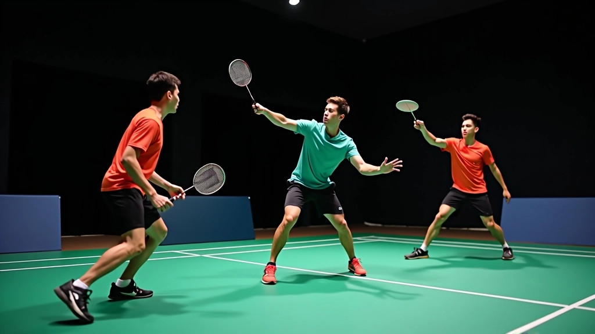

تمارين الإسقاط العرضي مع الشريك
مجموعة من التمارين الفعالة لممارسة الإسقاط العرضي مع شريك التدريب، مع تقنيات التغذية الراجعة والتصحيح المباشر.
اقرأ المزيدتعلم المبادئ الأساسية لتقنية الإسقاط العرضي من الصفر، مع التركيز على وضعية القدمين والمسكة الصحيحة


الإسقاط العرضي هو واحد من أهم اللقطات في الريشة الطائرة. إنها تقنية تتطلب دقة عالية وتحكماً كاملاً في المضرب. والخبر السار؟ يمكنك تعلمها من الآن.
اللقطة تعتمد على إرسال الريشة بسرعة منخفضة جداً فوق الشبكة مباشرة، بحيث تهبط قريبة جداً من خط الشبكة على ملعب الخصم. هذا يجبر المنافس على الاقتراب من الشبكة بسرعة، مما يفتح فرصاً لك للسيطرة على اللعبة.
قبل كل شيء، موقفك على الملعب مهم جداً. لا تقف بقدميك متقاربة أو متباعدة جداً. المسافة المثالية بين قدميك تكون بعرض الأكتاف تقريباً — حوالي 45 سنتيمتر.
ركبتاك يجب أن تكونا منحنيتين قليلاً طوال الوقت. هذا يساعدك على التحرك بسرعة في أي اتجاه. الكتفان يجب أن يكونا منفتحين — لا تنحن للأمام أو للخلف. وزنك يجب أن يكون موزعاً بالتساوي على كلا القدمين.
في اللحظة الأخيرة قبل أن تضرب الريشة، قدم واحدة تتحرك للأمام قليلاً. هذا يعطيك التوازن والثبات الذي تحتاجه. جرب هذا: قف وضع قدمك اليسرى للأمام قليلاً إذا كنت تضرب بيد يمنى.
المسكة هي أساس كل شيء. والخبر الجيد أنك لا تحتاج إلى مسكة قوية جداً للإسقاط العرضي. في الواقع، مسكة ضعيفة نسبياً أفضل.
استخدم مسكة "الحامل" أو "الشرقية" — وهي المسكة الأساسية. ضع المضرب بزاوية 45 درجة أمام جسدك، ثم امسكه بحيث تكون راحة يدك مسطحة على مقبض المضرب. أصابعك يجب أن تكون مرتاحة، وليس متشنجة.
جرب هذا الاختبار البسيط: امسك المضرب بهذه المسكة وتخيل أنك تمسك بيضة — ليس بقوة لتكسرها، وليس برفق لتسقطها. هذا هو المستوى الصحيح.
هذا الدليل مقدم لأغراض تعليمية وإعلامية فقط. تقنيات الريشة الطائرة تختلف من شخص لآخر حسب مستوى اللياقة البدنية والمرونة. ننصح بطلب إرشادات من مدرب معتمد قبل بدء أي برنامج تدريب جديد. توقف فوراً إذا شعرت بأي ألم أو إرهاق غير معتاد.
تابع تعلمك مع المزيد من الموارد التدريبية
مجموعة من التمارين الفعالة لممارسة الإسقاط العرضي مع شريك التدريب، مع تقنيات التغذية الراجعة والتصحيح المباشر.
اقرأ المزيد
تطوير مهاراتك إلى المستوى المتقدم مع تقنيات الإسقاط العرضي الخادعة والمتغيرات الاستراتيجية.
اقرأ المزيد
تحديد وتصحيح الأخطاء الشائعة التي يرتكبها اللاعبون عند أداء الإسقاط العرضي، مع حلول عملية وفعالة.
اقرأ المزيدالآن نصل للجزء الأساسي — كيف تحرك ذراعك والمضرب. الحركة هنا ناعمة وسلسة، ليست سريعة أو قوية. هذا هو الفرق بين الإسقاط العرضي والضربات الأخرى.
ارفع المضرب إلى مستوى الكتف تقريباً — حوالي 60 درجة من الأفقي. المرفق يكون ثابتاً نسبياً طوال الحركة. من هنا، تتحرك الساعد والمعصم بشكل سلس نحو الريشة.
عند ضربك للريشة، المضرب يجب أن يكون مفتوحاً قليلاً — بزاوية حوالي 20 درجة من الأفقي. هذا يسمح للريشة بأن تهبط بسرعة منخفضة جداً. تخيل أنك تمسح الريشة برفق بدلاً من ضربها بقوة.

الآن بعد أن تفهم النظرية، حان الوقت للممارسة. ابدأ ببطء جداً. لا تقلق بشأن إطلاق الريشة بقوة أو دقة عالية في البداية.
جرب هذا التمرين البسيط: قف بالقرب من الشبكة (حوالي 2-3 أمتار)، واطلب من شريكك أن يرمي الريشة لك بارتفاع وسط. ركز على الحركة الناعمة والسلسة. قم بـ 10 محاولات، ثم خذ فترة راحة.
في كل مرة، راقب ما تشعر به. هل المضرب يتحرك بسلاسة؟ هل أنت تحافظ على توازنك؟ هل الريشة تهبط قريبة من الشبكة؟ هذه الملاحظات أكثر أهمية من العدد الدقيق للمحاولات الناجحة.
قدماك بعرض الأكتاف، ركبتاك منحنيتان، وزنك موزع بالتساوي.
استخدم مسكة الحامل برفق — لا تشد المضرب بقوة.
حركة ناعمة وسلسة — تخيل أنك تمسح الريشة برفق.
ابدأ ببطء، راقب حركتك، وركز على السلاسة قبل السرعة.
تعلم الإسقاط العرضي يستغرق وقتاً، لكنه يستحق الجهد. ستجد أن هذه اللقطة تغير طريقة لعبك بشكل كبير. الخطوة الأولى هي البدء — اذهب للملعب وجرب ما تعلمته اليوم.